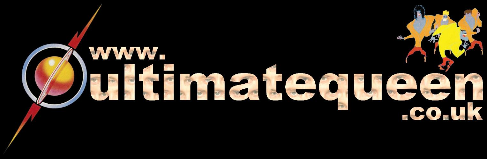

Queen Concerts (Archive des tournées)
Ultimate Queen (Discographie complète)

La base de données de référence qui répertorie tous les concerts donnés par Freddie Mercury et Queen (dates, setlists, photos et anecdotes).